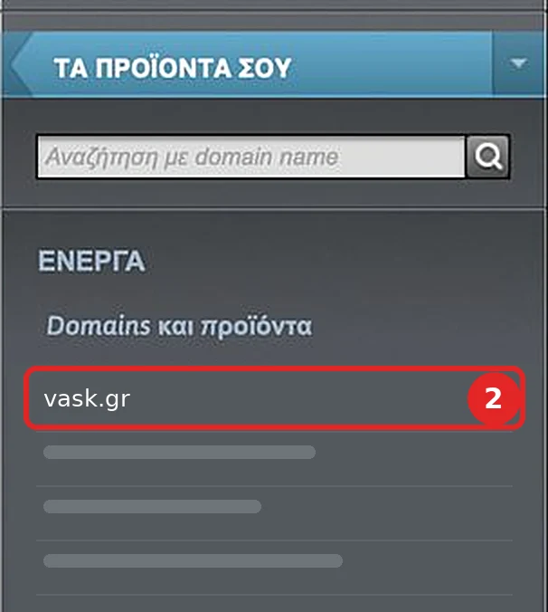
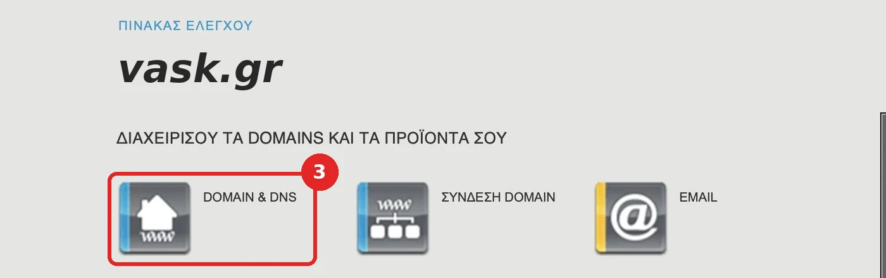
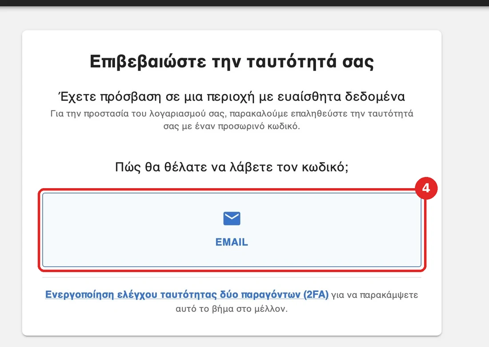
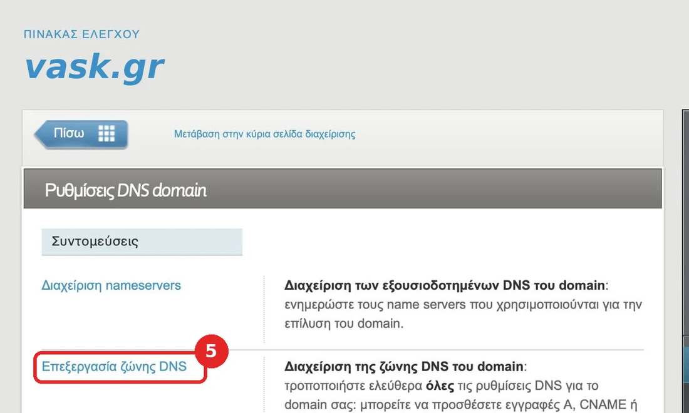
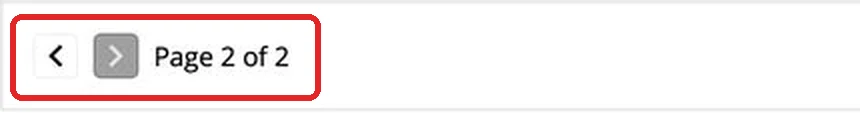
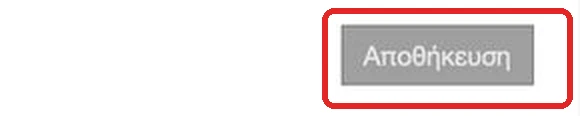

Οδηγός για τον κ. Κουτρούμπα · vask.gr
Πώς θα ανοίγει η νέα ιστοσελίδα στο vask.gr
Το vask.gr είναι στον δικό σας λογαριασμό στο Papaki. Για να εμφανίζεται εκεί η νέα ιστοσελίδα, υπάρχουν δύο εύκολοι δρόμοι. Διαλέξτε όποιον σας βολεύει — κανένας δεν χρειάζεται τεχνικές γνώσεις.
Το συνδέετε μόνος σας
Αλλάζετε 2 γραμμές στο Papaki. Το domain μένει στον λογαριασμό σας και το πληρώνετε εσείς, όπως τώρα.
≈ 10 λεπτά · 8 βήματα ↓ ΒΤο μεταφέρετε σε εμάς
Στέλνετε ένα μήνυμα στο Papaki και αναλαμβάνουμε εμείς τα πάντα: σύνδεση και ανανεώσεις.
≈ 5 λεπτά · 5 βήματα ↓ΑΤο συνδέετε μόνος σας
Θα αλλάξετε μόνο δύο γραμμές. Όλα τα υπόλοιπα τα αφήνετε ακριβώς όπως είναι.
-
Μπείτε στον λογαριασμό σας στο Papaki
Ανοίξτε το papaki.com, πατήστε Client Area πάνω δεξιά και συνδεθείτε με το email και τον κωδικό που χρησιμοποιείτε στο Papaki.
Αν δεν θυμάστε τον κωδικό, πατήστε «Ξέχασα τον κωδικό» στη σελίδα σύνδεσης — θα σας έρθει email.
-
Πατήστε στο vask.gr
Στη λίστα «Τα προϊόντα σου» βρείτε το vask.gr και πατήστε πάνω του. Αν έχετε πολλά, γράψτε vask στην αναζήτηση.

-
Πατήστε DOMAIN & DNS (το «σπιτάκι»)
Ανοίγει η σελίδα του vask.gr. Πατήστε το πρώτο εικονίδιο, το σπιτάκι με την ετικέτα DOMAIN & DNS. Αν στην επόμενη οθόνη δείτε κουμπί Διαμόρφωση DNS, πατήστε το.

-
Επιβεβαίωση με κωδικό στο email σας
Το Papaki θα σας ζητήσει να επιβεβαιώσετε ότι είστε εσείς. Πατήστε EMAIL. Θα σας έρθει στο email σας ένας 6ψήφιος κωδικός — γράψτε τον εκεί που σας ζητείται.

Αν δεν φτάσει σε 2 λεπτά, κοιτάξτε και στα «Ανεπιθύμητα» (spam).
-
Πατήστε Επεξεργασία ζώνης DNS

Θα ανοίξει ένας πίνακας με γραμμές (στήλες: Όνομα · TTL · Τύπος · Τιμή). Από αυτές θα αλλάξετε μόνο δύο — δείτε παρακάτω.
-
Γραμμή vask.gr με Τύπο A — αλλάξτε την Τιμή
Βρείτε τη γραμμή όπου το Όνομα είναι σκέτο vask.gr και ο Τύπος είναι A. Δεξιά, στο κουτάκι «Τιμή», σήμερα γράφει 213.158.90.92. Σβήστε το και γράψτε ακριβώς:
75.2.60.5 -
Γραμμή www.vask.gr με Τύπο CNAME — αλλάξτε την Τιμή
Βρείτε τη γραμμή www.vask.gr με Τύπο CNAME. Σήμερα στην Τιμή γράφει κάτι μεγάλο που τελειώνει σε …azurewebsites.net. Σβήστε το όλο και γράψτε ακριβώς:
vask-gr.netlify.appΑν δεν τη βλέπετε, είναι στη 2η σελίδα του πίνακα: πατήστε το βελάκι > κάτω αριστερά (ή γράψτε www στο κουτάκι «Αναζήτηση» πάνω από τον πίνακα).
Έτσι μοιάζει ο πίνακας του vask.gr — αλλάζετε μόνο τα κόκκιναΌνομαΤύποςΤιμήvask.grNSns1137.papaki.gr.vask.grA75.2.60.5 αλλάζει213.158.90.92→ 75.2.60.5vask.grMX10 · mail.vask.gr.vask.grTXTv=spf1 +a +mx include:_spf.fastmail.gr -allmail.vask.grA213.158.90.250webmail.vask.grA213.158.90.250www.vask.grCNAMEvask-gr.netlify.app αλλάζειvask-e8avbffmgyded5dz…azurewebsites.net.→ vask-gr.netlify.appαλλάζει το αλλάζετεμένει οι γκρι γραμμές μένουν όπως είναι — εκεί είναι το email σαςΜην σβήσετε καμία γραμμή (το καλαθάκι δεξιά) και μην πειράξετε τις γραμμές MX, TXT, mail και webmail. Μπορεί να δείτε και άλλες γραμμές που δεν είναι εδώ — αφήστε τις κι αυτές όπως είναι. -
Πατήστε Αποθήκευση κάτω δεξιά
Το πιο σημαντικό βήμα: χωρίς αυτό δεν κρατιέται τίποτα. Το κουμπί Αποθήκευση είναι κάτω δεξιά από τον πίνακα (δίπλα στο Page 1 of 2 αριστερά είναι τα βελάκια για τις σελίδες).

Αριστερά: αλλαγή σελίδας 
Δεξιά: Αποθήκευση Μετά στείλτε μας ένα σύντομο μήνυμα «Έγινε» και τα υπόλοιπα τα κάνουμε εμείς. Η αλλαγή χρειάζεται από λίγα λεπτά έως μερικές ώρες για να φανεί παντού.
ΒΤο μεταφέρετε σε εμάς
Επειδή και εσείς και εμείς είμαστε στο Papaki, δεν χρειάζεται «κωδικός μεταφοράς». Αρκεί να ζητήσετε από το Papaki να περάσει η διαχείριση του vask.gr στον λογαριασμό μας. Μπορείτε να το κάνετε από σήμερα — η τωρινή σας ιστοσελίδα δεν επηρεάζεται.
-
Μπείτε στον λογαριασμό σας στο Papaki
Όπως στο βήμα 1 πάνω: papaki.com → Client Area → σύνδεση.
-
Πατήστε Υποστήριξη
Στο μενού αριστερά πατήστε Υποστήριξη και ανοίξτε ένα νέο αίτημα (ticket). Αν ρωτήσει κατηγορία, διαλέξτε Domain names.
-
Θέμα: «Αλλαγή διαχειριστή domain vask.gr»
Αλλαγή διαχειριστή domain vask.gr -
Επικολλήστε αυτό το μήνυμα και πατήστε Αποστολή
Καλησπέρα σας, θα ήθελα να μεταφερθεί η διαχείριση του domain vask.gr από τον λογαριασμό μου στον λογαριασμό Papaki με κωδικό χρέωσης [ο κωδικός μας] (Advon Media – ΜΕΤΡΙΔΗΣ ΑΓΓΕΛΟΣ). Η ιδιοκτησία του domain παραμένει σε εμένα· αλλάζει μόνο ο διαχειριστής. Παρακαλώ να μεταφερθεί μαζί και η υπηρεσία email του domain, ώστε να συνεχίσει να λειτουργεί κανονικά. Ευχαριστώ, Βασίλης Κουτρούμπας -
Ενημερώστε μας ότι το στείλατε
Το Papaki μπορεί να σας ζητήσει να επιβεβαιώσετε το αίτημα από το email σας — απλώς πατήστε τον σύνδεσμο που θα σας στείλει. Μόλις το vask.gr εμφανιστεί στον λογαριασμό μας (συνήθως 1–2 εργάσιμες), τα υπόλοιπα τα κάνουμε εμείς: σύνδεση με τη νέα ιστοσελίδα και ανανεώσεις κάθε χρόνο.
Ποιο να διαλέξω;
Α · Το συνδέετε μόνος σας
- Το domain μένει στον λογαριασμό σας
- Την ανανέωσή του την πληρώνετε εσείς στο Papaki, όπως τώρα
- Το κάνετε τη μέρα που θα σας πούμε
Β · Το μεταφέρετε σε εμάς
- Δεν χρειάζεται να πειράξετε τίποτα τεχνικό
- Την ανανέωση την αναλαμβάνουμε εμείς
- Μπορείτε να το κάνετε από σήμερα
Και στις δύο περιπτώσεις το vask.gr είναι και μένει δικό σας, και το email σας συνεχίζει να δουλεύει.